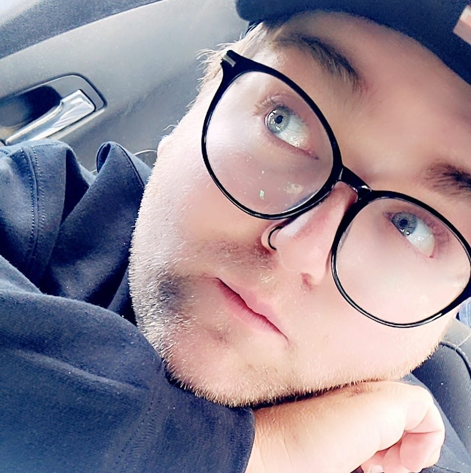

About Me
My name is Tyler Fasel, aliases are as follows: Tyler Jeffrey or SaturnTheOtter, I am a midwestern Illinoian with a creative passion to create, script, write, or design my ideas into reality. I spend most of my days currently working on my courses at Illinois State University, playing video games with my friends, managing multiple streamer's channels (as well as starting my own), manage my own content creation on YouTube, TikTok, and Kick, and spending time with my partner and my pet cat Sylvester.
My other interests are I enjoy true-crime documentaries on YouTube, keeping up with the Destiny 2 drama at Bungie, building and creating content and avatars with my partner for the VR Chat Furry community (check out TabbyTextures), and streaming my favorite games that I play casually or speedrun and post them to my YouTube channel or post to my TikTok.
Education
I spent my childhood and early schooling years creatively writing a variety of pieces. From music lyrics to short stories; from skit scripts to YouTube scripts for different friends and peers to better structure their channels. I also picked up digital art and video editing in highschool. I've done art from landscapes to character designs and reference sheets for original characters (OCs). I was a top editior for my highschool's newscast and I directed my class' Senior Video in 2016. I graduated Manteno High School in the Class of 2016 with an A/B average with educated connections in the art industry.
I currently am enrolled in Illinois State University pursuing my Bachelor's in Creative Technology with a Game Design focus. I plan to also obtain Web Design experience and to better perform my skills I have through learning in college and gaining clients throughout the years to make my brand as best as it can be.
Experience
A lot of my experience from Level Design and Creative Writing are from an collegiate level. Courses I have taken required me to create levels up to whiteboxing and adding in multiple terrain. However, I do have minor level projects I have worked on or with over the last couple years in the VR Chat sandbox. Currently using Unity and Unreal Engines to make my 3D level designs possible.
My experience in Content Creation, Graphic Design, and Digital Art comes from my own creations on YouTube and TikTok as well as from the clients I have for managing their channels. Creating Banners, Thumbnails, Profile Pictures, and writing out posts for their social medias have helped me build and grow their channels up to fairly substancial numbers over the years. Using programs through Adobe to make all of my output possible, with intermediate experience in iMovie and Final Cut Pro X.
Services I Offer
I offer my skills in 3D Design (Level and Character Design), Video Editing (Content Creation, Gaming Montages), Digital Artwork (Terrain, Landscape, Character Creation), and Graphic Design (Banners, Thumbnails, Web Design, Marketing Ads).
Under my name, there are navigation links to look at all my services more in detail.